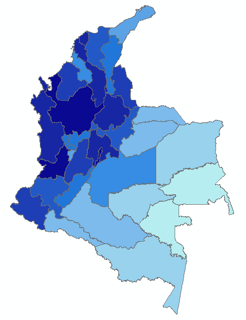
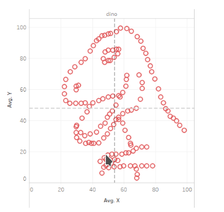

Visual Analytics
Visual Analytics una forma de ver la ciudad
IDECA GisDay 2020
@fabianheredia5¿Cuál visualización es mejor?

Interrogantes
¿De qué depende?
¿Cómo evaluarlo?
¿Existe un marco de referencia?
DEFINICIÓN DE VISUALIZACIÓN DE INFORMACIÓN (VIS)
Los sistemas de visualización basados en computador proporcionan representaciones visuales de conjuntos de datos diseñados para ayudar a las personas a realizar tareas de manera más efectiva.
Insight
- Entendimiento profundo
- Significativo
- No obvio
- Accionable
Tres requerimientos
Usuarios
Datos
Tareas
Una buena visualización permite a los usuarios completar
tareas de forma eficaz con los datos.
Cuando no usar una visualización
No necesita visualización cuando existe una solución completamente automática
y es confiable
Que me permite hacer una buena visualización
- Uso a largo plazo para usuarios finales (por ejemplo, análisis exploratorio de datos científicos)
- Presentación de resultados conocidos
- Trampolín para comprender mejor los requisitos antes de desarrollar modelos
- Ayuda a los desarrolladores de soluciones automáticas a refinar / depurar, determinar parámetros
- Ayuda a los usuarios finales de las soluciones automáticas a verificar y generar confianza
Un ejercicio!!
El resultado!
Mas ejemplos
fuenteDatasaurus!
https://dabblingwithdata.wordpress.com/2017/05/03/the-datasaurus-a-monstrous-anscombe-for-the-21st-century/Visual Analytics
¿Cómo hacen las personas la ciencia de datos?
Tradicional
Pros:
Cons:
|
Data Mining/ML
Pros:
Cons:
|
InfoVis
Pros:
Cons
|
What/Why/How

- What is visualized?
- abstraccion de los datos
- Why is the user looking
at it?
- abstraction de las tareas
- How is visualized?
- codificacion visual e interaccion de los modismos
Ejemplo 1
- What: Datos Geograficos.
- Why: presentar la informacion de referencia de la ciudad
- Why: encontrar informacion de interes e identificar su ubicacion
- Why: comparar imformacion geografica
- Why: identificar donde se estan realizando las obras de infraestructura de la ciudad
- Idiom: Mapa.
- Marcas: puntos, lineas y poligonos
- Canales: Eje x, eje y para ubicar los elementos geograficos, color para clasificarlos
- interaccion: zoom, ventana emergente de la informacion
Ejemplo 2
- What: Datos Geograficos y datos tabulares.
- Why: Las personas se mueven a los polos económicos?
- Why: Donde quedan los polos a los que las personas se mueven?
- Why: Las personas que se mueven a los polos en que medios de transporte lo hacen?
- Idiom: ??????????.
- Marcas: ????
- Canales: ?????
- interaccion: ?????
Visual Analytics
Visual Analytics una forma de ver la ciudad
IDECA GisDay 2020
@fabianheredia